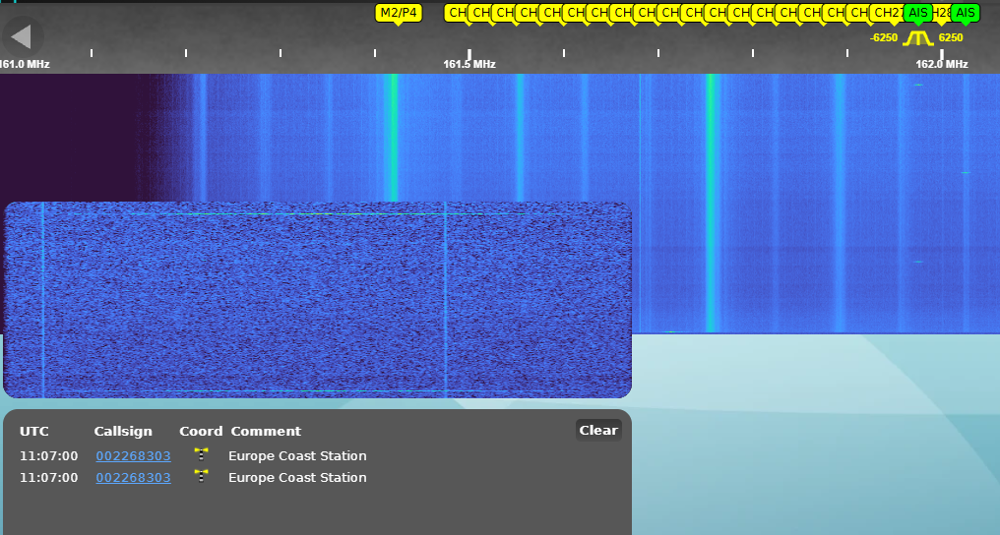

Projet personnel
Reception radio SDR
OpenWebRX+PythonRTL-SDR et SDRplay
Une station radio logicielle accessible depuis le web avec plusieurs profils de reception.
Le projet
La station utilise un SDRplay RSPdx pour ecouter plusieurs types de signaux : FM, AM, LSB, USB et CW.
OpenWebRX+ permet d'acceder aux recepteurs depuis une interface web et de choisir les profils de reception que je veut écouter.
Points techniques
- Configuration de recepteurs SDR varies
- Profils OpenWebRX+ pour plusieurs usages
- Reception DAB+, AIS, aviation, FM, AM et shortwave
- Création d'un script Python pour automatiser la gestion des profils sur un compte Discord
Exemple d'écoute
Voici une capture de l'interface OpenWebRX+ utilisée pour écouter les signaux reçus par la station :
